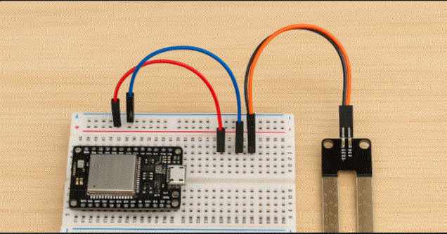

Proyecto Tecnológico Escolar
La creación de una huerta escolar busca fomentar la conciencia ambiental, el trabajo colaborativo y el aprendizaje práctico en temas de agricultura urbana y sostenibilidad.
El sistema de la Huerta Escolar está compuesto por sensores que recopilan información del entorno (humedad, temperatura y luz), un microcontrolador que procesa los datos, y una aplicación web que permite visualizar esta información.
Los sensores recopilan datos del entorno y los envían al microcontrolador ESP32. Este procesa la información y la transmite mediante WiFi hacia la aplicación web, donde los usuarios pueden visualizar los valores en tiempo real desde cualquier dispositivo conectado a Internet.
Se realizó la conexión del sensor YL-69 al ESP32 usando una protoboard y cables. Se verificó la alimentación a 3.3V y la comunicación por pin analógico.
Los sensores respondieron correctamente mostrando variaciones de humedad, temperatura y luz en tiempo real. Esto confirma la correcta comunicación entre el ESP32 y los sensores.